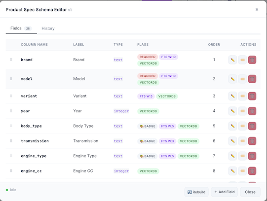
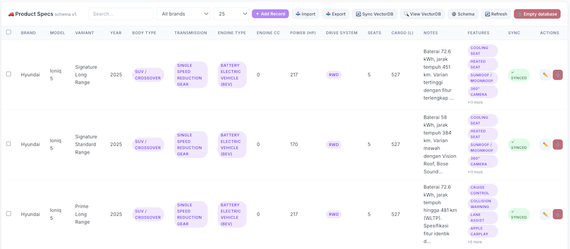
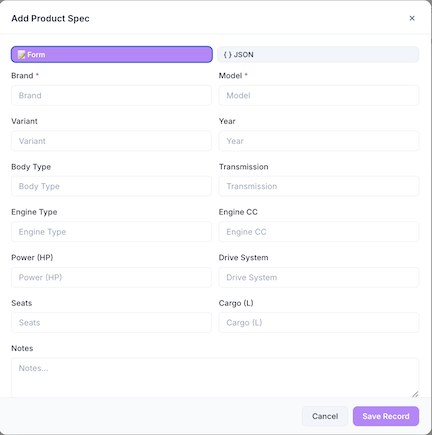
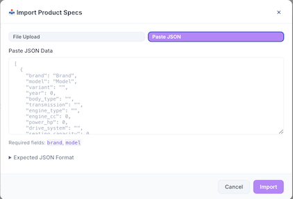

Product Specifications
Manage structured product specification data with fully customizable attributes, flexible import options, and semantic search integration.
editor manager superadmin
Overview
The Product Specifications database stores structured product data with detailed attributes, variant tracking, and up to 15 configurable boolean feature flags. All fields — including the boolean flags — are defined by you and can represent any product type, not just vehicles. It supports full-text search, VectorDB semantic search, and multi-format import/export.
The schema is not tied to any specific product category. While the default field names use automotive terminology as examples (engine_type, transmission, etc.), you can populate these fields with any values that suit your products — electronics, furniture, machinery, or any other domain. The boolean feature flags are equally generic and can represent any yes/no attribute.
Data Schema
Each product spec record is built from three types of fields:
| Data Type | Fields | Purpose |
|---|---|---|
| Text String | brand (required), model (required), variant, plus 8 extended attribute fields | Store any descriptive value — names, categories, specifications, ratings, or any free-form label relevant to your product |
| Number Integer | year | Numeric product attribute, such as release year or version number |
| Boolean True / False | 15 feature flag fields | Track any yes/no attribute — e.g., has warranty, is waterproof, supports a specific feature |
| Free Text String | spec_notes | Unstructured notes; fully searched and included in AI embeddings |
The built-in field names (e.g., brand, model, variant, and the extended attribute fields) use generic product terminology. You can fill them with any values that make sense for your domain — the system treats them as plain text. The 15 boolean flags work the same way: each one simply records true or false for whatever attribute you assign it to.
Managing the Schema
The Product Specifications schema is fully editable at runtime — you can add, rename, reorder, or remove fields without touching any code or restarting the server. Click the "Edit Schema" button at the top of the Product Specs page to open the Schema Editor.
Field Properties
Each field in the schema has the following properties:
| Property | Description |
|---|---|
| Field Name | Internal identifier, lowercase with underscores (e.g., color, weight_kg). Used as the data key. |
| Label | Human-readable display name shown in the table header and form. |
| Data Type | text, integer, or real — controls validation and sorting. |
| Format Hint | Controls how the value is rendered in the UI: boolean_badge (Yes/No badge), badge (colored pill), currency (formatted number), textarea (multiline input), or default (plain text). |
| Required | Whether the field must be filled when adding a record. |
Any field with Format Hint = boolean_badge is treated as a yes/no feature flag and grouped into the Features column in the table view. All other fields get their own column.
Adding a Field
- Open the Schema Editor via "Edit Schema".
- Click "＋ Add Field" in the editor footer.
- Fill in the field name, label, data type, and format hint.
- Click Add Field. The field is immediately available in the add/edit form and table.

Editing a Field
Click the Edit (pencil) icon next to any field in the Schema Editor to update its label, data type, or format hint. The field name itself can be changed via the Rename action.
Renaming a field updates the schema definition but does not migrate existing data. Records saved under the old field name will not automatically move to the new name. Plan renames before importing large datasets.
Reordering Fields
Drag and drop fields within the Schema Editor to change their display order in the table and form. The order is saved immediately.
Removing a Field
Click the Delete (trash) icon next to a field. The field is removed from the schema — it will no longer appear in the table or forms. Existing data stored under that field key is retained in the database but will be ignored by the UI.
Rebuild Index
After making schema changes, click "🔄 Rebuild" in the Schema Editor to regenerate the full-text search index and VectorDB embeddings to reflect the new structure.
Table View
The table lists all product specification records with their full set of attributes — text fields, numeric values, and boolean feature flags displayed as green Yes / gray No badges.

Search & Filters
- Search — Full-text search across all text attribute fields and notes
- Brand filter — Dropdown dynamically populated from distinct brand values in the database
- Category filter — Dropdown dynamically populated from distinct category/type values stored in the database
- Pagination — Navigate through large datasets
Filter dropdowns are built at runtime from the actual data in your database — they always reflect the values you've entered, regardless of what product type or domain you're managing.
Add / Edit / Delete
Adding a Spec
- Click "+ Add" above the table.
- A modal appears with two tabs: Form and JSON.
- Use the Form tab for guided input with labeled fields, dropdowns, and checkboxes for feature flags.
- Or use the JSON tab to paste a complete JSON object directly.
- Click Save. The data is validated before saving.

Editing a Spec
Click Edit on any row. The form is pre-filled with current values. Both Form and JSON tabs are available.
Deleting a Spec
Click Delete on any row. Confirmation required. The record is permanently removed.
Import & Export
Product Specs support three import formats — the most flexible of all data types:
| Format | Extension | Notes |
|---|---|---|
| JSON | .json | Array of spec objects |
| CSV | .csv | Header row required, comma-separated |
| Excel | .xlsx, .xls | First sheet used, header row required |
Product Specs is the only data type that supports Excel import. This is useful for teams who maintain spec sheets in spreadsheets.

VectorDB Sync
Like the Pricing Database, product specs can be synced to ChromaDB for semantic search. This allows the AI to answer natural-language questions about product specifications.
- Click "Sync VectorDB" at the top of the Product Specs page.
- Each spec record is converted to a text representation and embedded.
- Specs become discoverable via semantic queries like "which products have wireless charging and keyless entry?" — adapted to whatever attributes you've stored.
Truncate
The "Truncate" button deletes ALL product spec records permanently. Export your data first if you need a backup. This cannot be undone.